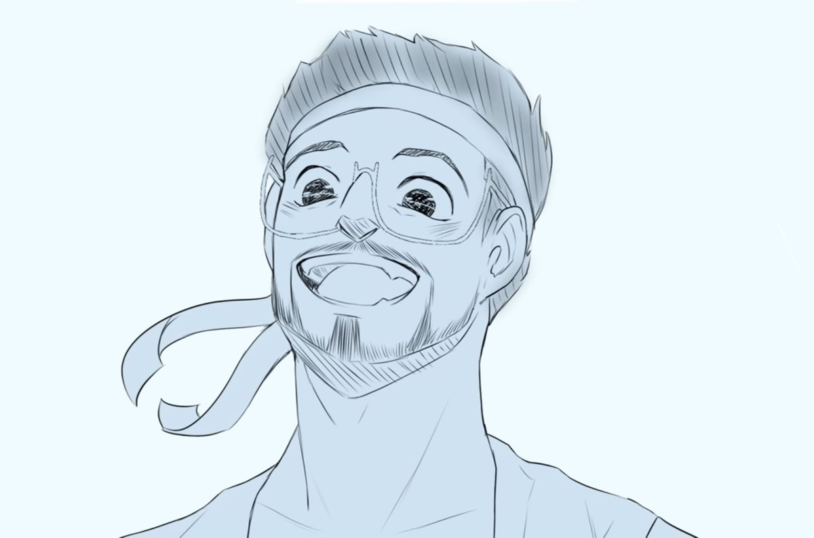

Polites é um dos amigos mais próximos de Odisseu entre os soldados, conhecido por sua gentileza e visão positiva do mundo. Em meio a tantos desafios e perigos, ele representa esperança e humanidade.
Sua forma de enxergar as situações muitas vezes contrasta com a dureza da jornada, lembrando a todos que ainda existe bondade, mesmo nos momentos mais difíceis. Por isso, sua presença se torna marcante e emocional ao longo da história.